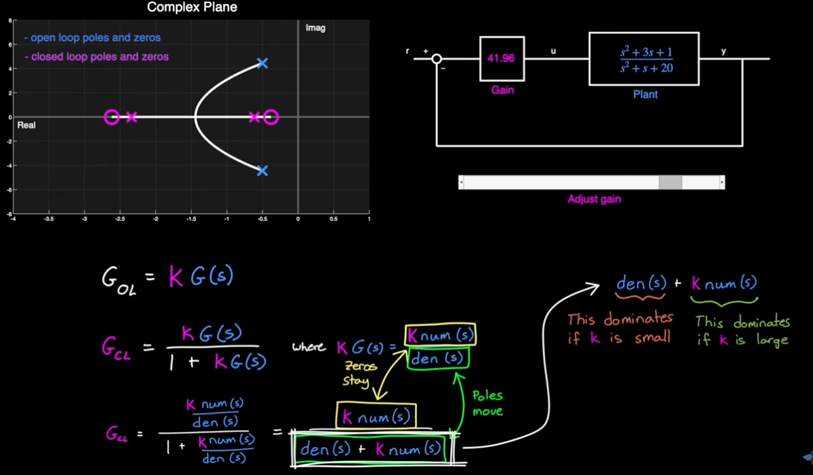
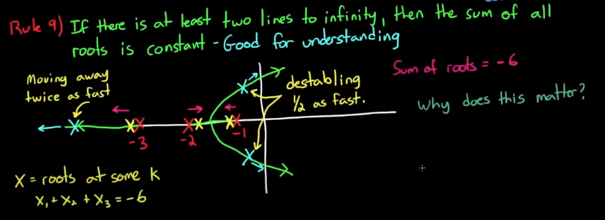

Root Locus Analysis
Essential Tips/Reminders
- Root locus plot displays open-loop poles and zeroes as starting points and end points respectively, for the trajectories of the closed loop poles.
- This is because both zeros and poles of the open loop system affects the poles (by extension stability) of the closed-loop system.
- The locations of the closed-loop poles are dictated by gain K, as shown below.
- Zeroes do not move on the plot, only poles.

-
We can see from the equations above that closed-loop poles move from open-loop poles to open-loop zeros as we increase K.
-
Important intuition of the PID controller with root locus is developed on the page for PID.
Poles and Zeros
-
The stability of an LTI system depends solely on the poles of its transfer function, including stability, speed of decay/growth, or natural oscillaitons.
-
Zeros (roots of the numerator) don’t directly affect stability because they don’t appear in the characteristic equation that governs the natural modes of the system.
-
Poles define how the system naturally behaves (transients, stability). Zeroes shape how the system reacts to inputs (modify transients, steady-state gain/phase, can cancel or distort modes)
What can Zeros do?
- Transient Shape and Overshoot
- Zeros can introduce additional terms in the time response that can increase or decrease overshoot, depending on their location.
- A zero close to the origin (s = 0) or near the imaginary axis can significantly change the transient waveform.
- Direction and Phase
- Zeros affect the phase of the frequency response.
- Magnitude Shaping
- Zeros can boost or attenuate specific frequency components, affecting bandwidth and disturbance rejection.
Root Locus plot

Where \(\mathcal{Z}\) is the damping ratio. \(\mathcal{Z}=1\) means critically damped, \(\mathcal{Z}<1\) means underdamped and \(\mathcal{Z}>1\) means over damped.
The radial lines denote the lines of constant damping ratio \(\mathcal{Z}=cos(\phi)\), which defines a cone of damping ratio to satisfy design specs.
Typical Design Requiremnts - Applications of Root Locus Plots

What is a Root Locus Plot?
root locus analysis is a graphical method for examining how the roots of a system change with variation of a certain system parameter, commonly a gain within a feedback system.
Setting up Root Locus Plot
We need to get the pole to the correct form 1 + G(s) = 0


10 Rules of Root Locus
Setting the system up in this form: \(1 + K \frac{Q(s)}{P(s)}\)
let
n = number of poles of G(s) (also the number of loci), the open loop transfer function
m = number of zeros of G(s)
l = 0, 1, 2, 3… natural numbers
q=order of repeated pole or zero
\(\psi_{p} = \text{angle from a pole}\). Connect each pole with the pole/zero of interest, the angle between that line and positive x axis is \(\psi_p\)
\(\psi_{z} = \text{angle from a zero}\). Connect each zero with the pole/zero of interest, the angle between that line and positive x axis is \(\psi_z\)
A root refers to a closed-loop pole of the system for a particular value of the gain K.
Rule 1: There are n lines (loci), where \(n = max(deg(Q), deg(P))\)
Rule 2: As K increases from 0 to \(\infty\), the closed loop poles move from the poles of open loop \(G(s)\) to the zeroes of open loop \(G(s)\)
- if there are same number of poles and zeroes, they form a pair the roots travel from one pole to a zero.
- if there are more Poles than Zeroes, the lines from the extra poles go to \(\infty\)
- if there are more Zeroes than Poles, the lines come from infinity to the extra zeroes
Rule 3: When roots are complex, they occur in conjugate pairs and move together but mirrored across the real plane
Rule 4: At no time will the same root cross over its path
- Paths of other roots may cross each other
Rule 5: The portion of the real axis to the left of an odd number of open loop poles and zeroes are part of the loci
- Another way to restate: For K>0, loci exist on the real axis to the left of odd numbered poles and zeroes
Rule 6: Lines leave and enter the real axis at \(90^\circ\).
Rule 7: If there are not enough poles or zeroes to make a pair then the extra lines go to (for poles) or come from (for zeroes) infinity.
Rule 8: Line go to infinity along asymptotes
- The angles of the asymptotes, \(\phi_{A} = \frac{(2l+1)}{n - m} * 180^\circ\)
- Asymptotes intercept the real axis at \(\sigma_{0}\) (ie. centroid of the asymptotes), \(\sigma = \frac{\Sigma \text{finite poles} - \Sigma \text{finite zeroes}}{n - m}\)
- Angle of departure from a pole: \(\frac{1}{q}(\Sigma(\psi_z)-\Sigma(\psi_p)-180-360l)\)
Rule 9: If there are at least two lines to infinity, then the sum of all roots is constant
Rule 10: K going from 0 to \(-\infty\) can be drawn by reversing rule 5 and adding \(180^\circ\) to the asymptote angles.
More details on the 10 rules
Rule 2: \(P(s) +KQ(s) = 0\) by re-arranging the terms. When K = 0, P(s) = 0, which is the definition of poles for G(s). As K increases, more emphasis is put on Q(s)
Rule 9:
